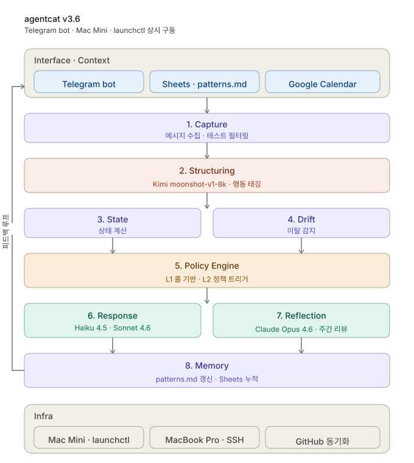

금동이봇
설계 원칙
만들면서 가장 어려웠던 건 결정의 기준이었어요. 새 기능을 떠올리면 일단 넣고 싶고, 결과가 안 나오면 정책을 슬쩍 바꾸고 싶었거든요. 그래서 비전 한 단락과 네 가지 원칙을 책상 위에 붙여두고, 흔들릴 때마다 그쪽으로 돌아왔습니다.
금동이봇이 하는 일
제가 만든 게 결국 뭐였는지 정리하는 데 시간이 좀 걸렸어요. 처음엔 그냥 "회고를 자동화하는 봇"이라고 생각했는데, 만들면서 보니 그건 절반도 안 되더라구요.
금동이봇은 10년 동안 해오던 회고를 바탕으로 만든, 상태 기반 자기조절 시스템이에요. 사용자가 던진 자연어 메시지를 해석해서 상태를 계산하고, 정책에 따라 말할지 침묵할지 판단하고, 그 흐름을 회고와 패턴으로 정리해줍니다. 자동화라기보다 자기 흐름을 매일 비춰주는 거울에 가까웠습니다.
출발점에 둔 비전
처음 일주일은 비전 한 단락을 쓰고 또 고치는 데 다 보냈어요. 기능을 먼저 떠올리면 매번 길을 잃더라구요. 그래서 사용자에게 어떤 태도로 다가갈지부터 적어두고, 모든 결정을 이 안에서 내려야겠다고 정했습니다.
금동이봇은 텔레그램에 던지는 모든 메시지의 의도와 감정을 판단해서 기록해줍니다. 내 뇌의 '비서'이자 '외장하드'가 되어, 기록의 부담은 사라지고 자기 이해를 위한 데이터는 남습니다. 데이터의 패턴을 읽어 '성장과 회고'라는 본질에 집중할 수 있도록 합니다.
핵심은 기록 자체가 또 하나의 일이 되지 않을 것. 사용자는 평소처럼 말하기만 하면 된다는 거였어요. 이 한 문장이 나중에 '태그리스 입력'이라는 결정의 출발점이 됩니다.
네 가지 설계 원칙
비전을 잡고 나니 진짜 어려운 건 만드는 동안의 흔들림이었어요. 새 기능이 떠오르면 일단 넣고 싶고, 결과가 안 나오면 정책을 슬쩍 바꾸고 싶고. 그래서 네 가지 원칙을 책상 위에 붙여두고, 흔들릴 때마다 이 네 가지로 돌아왔습니다.
| 원칙 | 의미 |
|---|---|
| Raw 저장 우선 | 판단 전에 먼저 기록. 원문은 절대 변형하지 않는다. |
| Policy 기반 개입 | 규칙 없는 반응 금지. 모든 응답은 정책 레벨에 근거한다. |
| 자동 정책 변경 금지 | 시스템이 스스로 규칙을 바꾸지 않는다. 승인 기반으로만 반영한다. |
| 전환 학습 | 회피에서 실행으로의 전환 패턴을 본다. 캐묻지 않는다. |
가장 자주 돌아온 건 'Raw 저장 우선'이었어요. LLM이 분류한 값을 그대로 시트에 덮어쓰고 싶은 유혹이 매일 들었거든요. 그래도 원문을 살려두니 나중에 시스템 판단이 어디서 흔들렸는지 추적할 수 있어서, 결국 이 원칙이 가장 든든한 안전망이 됐습니다.
핵심이 된 설계 결정들
실제로 만들면서 처음 떠올린 방식이 답이 아닐 때가 많았어요. 결정 하나하나가 왜 필요한지 다시 정리해야 했고, 그 흔적이 이 표에 남아 있습니다.
| 결정 | 무엇 | 왜 |
|---|---|---|
| 태그리스 입력 | 사용자가 #태그나 감정 점수를 직접 입력하지 않음. LLM이 맥락으로 자동 분류. | 기록이 노동이 되면 지속 불가능. 사용자는 그냥 말하고, 시스템이 해석한다. |
| 4단계 개입 레벨 (L0~L3) | Recorder(침묵) / Mirror(반영) / Coach(질문) / Micro Plan(제안) | 언제 말하고 언제 침묵할지를 디자이너가 직접 정책으로 설계해야 한다. |
| 능동형 L4 (아침·저녁·주간) | 시간 기반 자동 발동. 사용자가 부르지 않아도 먼저 말을 건다. | 시스템이 환경이 되려면 수동 도구를 넘어서야 한다. 단, 개입 피로를 막는 룰 병행. |
| 모델 역할 분리 | 태깅은 저비용 Kimi, 회고는 Claude Opus, L1 반응은 Haiku | 비용이 곧 UX 제약. 지능의 깊이를 기능별로 설계. 월 운영비 ~$3.66. |
| 근거 병기 원칙 | 좋은 흐름이야 (실행 10건 / 회피 0건 / 총 14건) 형식으로 판단과 근거를 함께 출력 | 블랙박스 금지. 사용자가 시스템의 판단을 검증할 수 있어야 한다. |
| 소표본 가드레일 | 데이터 3건 미만이면 패턴 단정 금지 | 거짓 확신은 몰입을 깬다. 모르면 모른다고 한다. |
가장 오래 고민한 건 '능동형 L4'였어요. 시스템이 사용자가 부르지 않아도 먼저 말을 거는 결정. 도구가 환경이 되려면 꼭 필요한데, 동시에 가장 위험한 결정이기도 했어요. 잘못 설계하면 그저 또 하나의 알림 앱이 되거든요. 그래서 능동형은 시간 기반 세 번(아침·저녁·주간)으로만 제한하고, 나머지는 사용자가 말을 건넬 때만 반응하도록 묶었습니다.
전체 구성
이 결정들을 다 통과시키고 나니, 구성은 결국 이런 모양으로 자리 잡았어요.
- 구성: 텔레그램 봇 + Google Sheets(데이터) + patterns.md + Google Calendar(컨텍스트)
- 인프라: Mac Mini 서버에서 launchctl로 상시 구동, MacBook Pro에서 개발, GitHub로 동기화
- 파이프라인: Capture → Structuring(Kimi) → State → Drift → Policy → Response → Reflection(Claude) → Memory
- LLM 스택: Kimi(moonshot-v1-8k), Claude Opus 4.6, Sonnet 4.6, Haiku 4.5
- 버전 이력: v1.0 → v2.3 → v3.6 (2026년 2~4월 사이 11번 업데이트)

겉으로 보기엔 그냥 텔레그램 봇 하나지만, 그 뒤에서는 여러 모델과 시트, 노트가 동시에 살아 움직이고 있어요. 이걸 사용자에게 어떻게 안 보이게 만들지가 다음 과제였습니다.